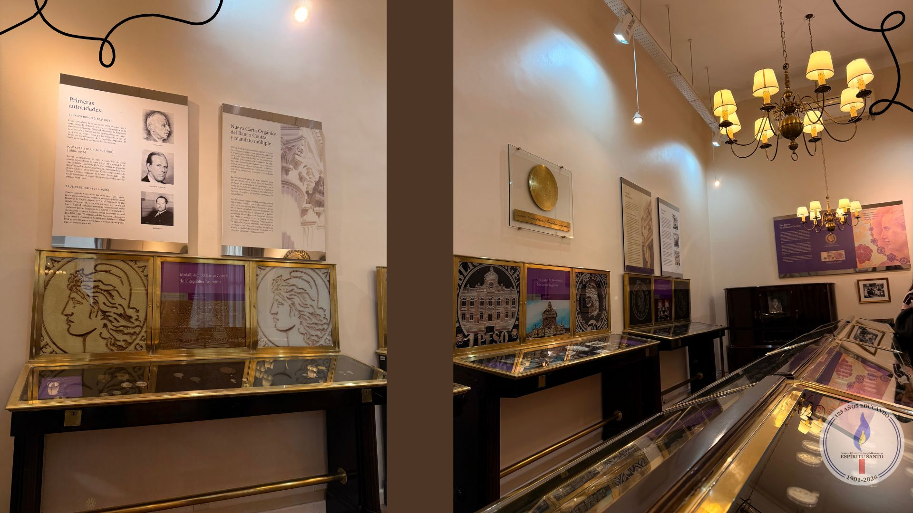

Visita al Banco Central
Por: Tiziano Nikias y Victoria Vega

Participaron los alumnos de 5°A y 5°B.
El jueves 4 de Junio los chicos y chicas de los años 5A Economía y 5B Informática fuimos a una visita al Museo del Banco Central. Nos recibieron nuestros docentes y empezamos el recorrido.
Primero fuimos a una sala llamada "Tesoros del Mar" donde se encontraban distintos tipos de monedas antiguas de diferentes continentes y allí conocimos a nuestro guía llamado Leandro, que con un ida y vuelta divertido nos informó sobre la historia del Banco Central, el origen del dinero en América y los distintos billetes que tuvo la Argentina a lo largo del tiempo.
Pasamos por varias salas con artículos historicos exhibidos y las respectivas explicaciones de cada uno de la mano de Leandro, tales como: los sistemas de economicos en la argentina, por qué las monedas tienen cara y cruz o por qué los billetes modernos tienen distintos sistemas de seguridad.